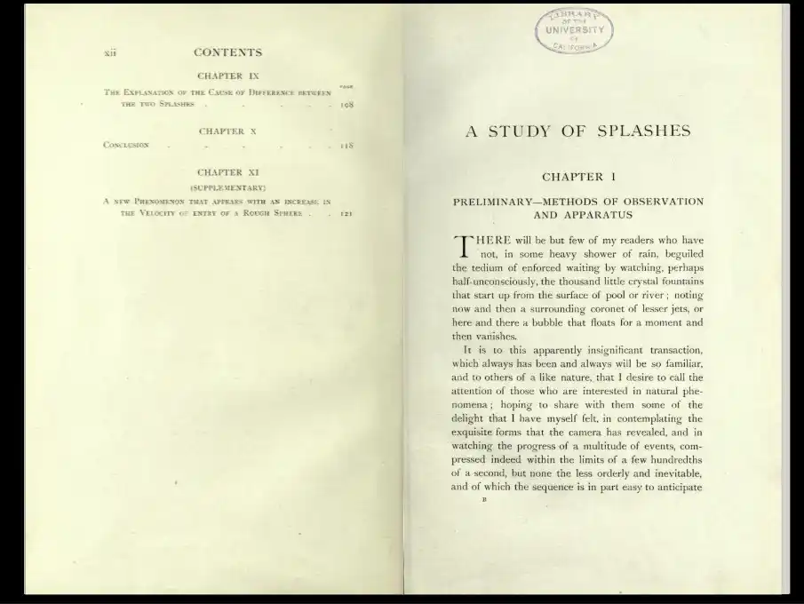

-- POUR ALLER PLUS LOIN--
Pour découvrir le monde des gouttes, je vous invite à aller voir les sites suivants, de magnifiques œuvres vous y attendent:
Pour aller plus loin dans la photo:
Pour l'histoire, un livre publié en 1908 sur l'étude des splashs :
